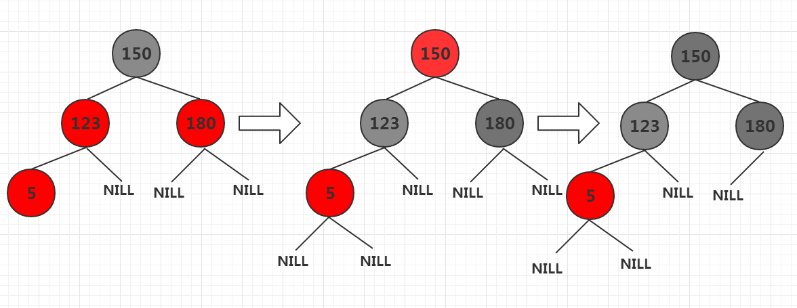
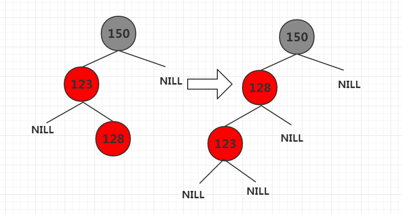
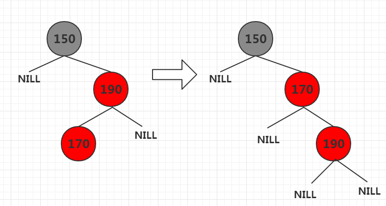
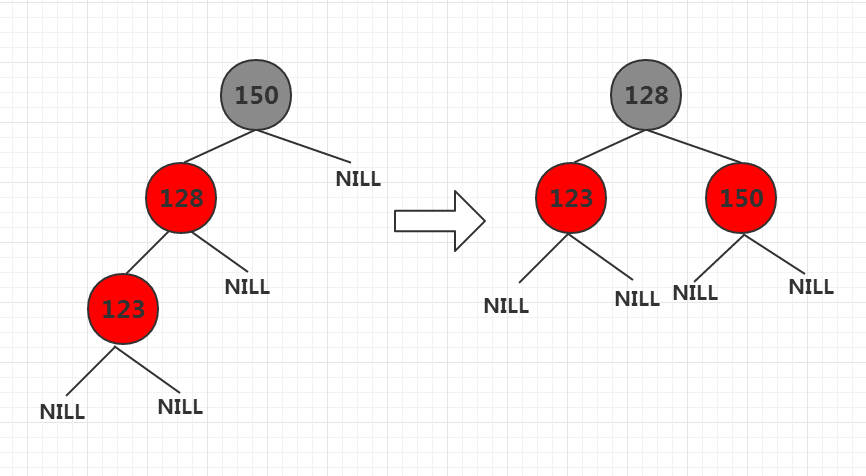
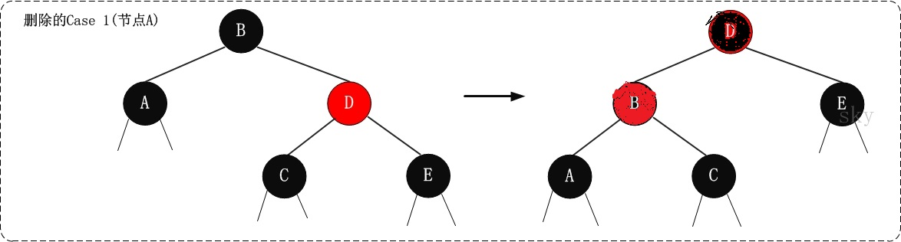
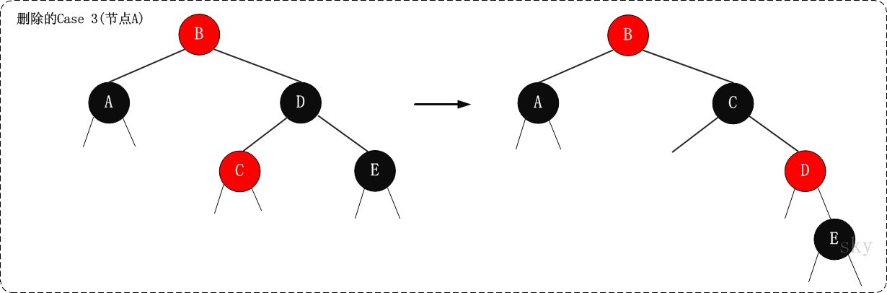

红黑树是高效查找和插入删除的数据结构，用途很广泛，如epoll的消息注册机制，stl中的map都采用了红黑树。
红黑树的主要特性：
（1）每个节点或者是黑色，或者是红色。（2）根节点是黑色。（3）每个叶子节点（NIL）是黑色。 [注意：这里叶子节点，是指为空的叶子节点！]（4）如果一个节点是红色的，则它的子节点必须是黑色的。（5）从一个节点到该节点的子孙节点的所有路径上包含相同数目的黑节点。
定理：一棵含有n个节点的红黑树的高度至多为2log(n+1)。
定义节点为TreeNode，TreeNode类内容如下：
1 | class TreeNode |
树的左旋和右旋
左旋：
用C++实现左旋
1 | //节点X左旋 |
如下图为左旋40节点
右旋：
用C++实现y节点右旋
1 | /************** |
右旋示意图
红黑树的插入
红黑树的插入分三步：1.将红黑树当作一颗二叉查找树，将节点插入2.将插入的节点着色为"红色"3.通过一系列的旋转或着色等操作，使之重新成为一颗红黑树
将节点插入后着色为红色可能会导致红黑树特性失效，有可能使特性(4)失效：如果一个节点是红色的，则它的子节点必须是黑色的。
前面将结果二叉搜索树的插入，这里和之前类似，不再赘述，C++实现如下：
1 | void TreeClass::rbInsertNode(TreeNode * z) |
根据被插入节点的父节点的情况，可以将”当节点z被着色为红色节点，并插入二叉树”划分为三种情况来处理。
① 情况说明：被插入的节点是根节点。
处理方法：直接把此节点涂为黑色。
② 情况说明：被插入的节点的父节点是黑色。
处理方法：什么也不需要做。节点被插入后，仍然是红黑树。
③ 情况说明：被插入的节点的父节点是红色。
处理方法：那么，该情况与红黑树的“特性(4)”相冲突。这种情况下，被插入节点是一定存在非空祖父节点的；进一步的讲，被插入节点也一定存在叔叔节点(即使叔叔节点为空，我们也视之为存在，空节点本身就是黑色节点)。理解这点之后，我们依据”叔叔节点的情况”，将这种情况进一步划分为3种情况(Case)。
case1 当前节点的父节点是红色，且当前节点的祖父节点的另一个子节点（叔叔节点）也是红色。
处理策略
(01) 将“父节点”设为黑色。
(02) 将“叔叔节点”设为黑色。
(03) 将“祖父节点”设为“红色”。
(04) 将“祖父节点”设为“当前节点”(红色节点)；即，之后继续对“当前节点”进行操作。
这么做的目的是保持黑色节点数量一致，并且将红色节点上移，直到其为根，将根节点设置为红色。
如下图为case1：

case2 当前节点的父节点是红色，当前节点的叔叔节点为黑色。分为四种情况。在case2中只讨论前两种，后面两种归类为case3
case 2.1 当前节点父节点是其祖父节点的左孩子，当前节点是其父节点的右孩子，那么以当前节点的父节点为 支点进行左旋，如下图：
case 2.1 当前节点父节点是其祖父节点的右孩子，当前节点是其父节点的左孩子，那么以当前节点的父节点为 支点进行右旋，如下图：

综上所述：case2的两种情况就是将父节点和子节点通过旋转放置在一侧。
case3 当前节点的父节点是红色，当前节点的叔叔节点是黑色，和case2两种情况不同的是
case3.1 当前节点父节点是其祖父节点的左孩子，当前节点是其父节点的左孩子，那么将父节点设置为黑色，祖父节点设置为红色， 以祖父节点为支点右旋，如下图：
case3.2 当前节点父节点是其祖父节点的右孩子，且当前节点是其父节点的右孩子，那么将父节点设置为黑色，祖父节点设置为红色， 以祖父节点为支点进行左旋，同上例子，不再赘述，只是左右不同。
将上述着色和旋转过程完善，封装为rbInsertFixUp()函数如下
1 | //重新着色和旋转 |
读者可以反复推敲上面代码，下面介绍红黑树的删除。红黑树的删除和普通的二叉搜索树一样，只是删除后多增加一些旋转和调节颜色的手段。
先删除节点z，然后在旋转和着色。如果节点z仅有一个孩子或者没有孩子，直接删除，并用子节点替代它即可。如果z有两个孩子，那么找到后继
节点，将z替换为后继节点的数值，并且删除后继节点，再对后继节点的孩子进行旋转和着色即可。
下面是红黑树删除的代码
1 | TreeNode * TreeClass::rbDeleteNode(TreeNode * z) |
对于删除的旋转和颜色变换是有规律的，由于红黑树是由2-3树变化而来，所以想了解红黑树删除原理需要进一步了解2-3树即可。
我只是根据算法导论和红黑树原理进行总结。对于节点X旋转和着色可以概括为3种情况。
① 情况说明：x是红色节点。
处理方法：直接把x设为黑色，结束。此时红黑树性质全部恢复。
② 情况说明：x是黑节点，且x是根。
处理方法：什么都不做，结束。此时红黑树性质全部恢复。
③ 情况说明：x是黑节点，且x不是根。红黑树的删除分如下四种情况：Case 1 x是黑节点，x的兄弟节点是红色Case 1.1 如果x是其父节点的左孩子， 将x的兄弟节点设为黑色，将x的父节点设为红色，对x的父节点进行左旋， 左旋后重新设置x的兄弟节点 Case 1.2 如果x是其父节点的右孩子， 将x的兄弟节点设为黑色，将x的父节点设为红色，对x的父节点进行右旋， 左旋后重新设置x的兄弟节点
如下图所示

Case 2 x是黑节点，x的兄弟节点是黑色，x的兄弟节点的两个孩子都是黑色,将x的兄弟节点设为红色, 设置x的父节点为新的x节点。
处理结果如下图：
Case 3 x是黑节点，x的兄弟节点是黑色；Case 3.1 x是其父节点的左孩子，X的兄弟节点的左孩子是红色，右孩子是黑色的,解决策略如下：
(01) 将x兄弟节点的左孩子设为“黑色”。
(02) 将x兄弟节点设为“红色”。
(03) 对x的兄弟节点进行右旋。
(04) 右旋后，重新设置x的兄弟节点。Case 3.2 x是其父节点的右孩子，x的兄弟节点的右孩子是红色，左孩子是黑色的,解决策略如下：
(01) 将x兄弟节点的右孩子设为“黑色”。
(02) 将x兄弟节点设为“红色”。
(03) 对x的兄弟节点进行左旋。
(04) 左旋后，重新设置x的兄弟节点。

Case 4 x是黑节点，x的兄弟节点是黑色； Case 4.1 x是其父节点的左孩子，x的兄弟节点的右孩子是红色的，x的兄弟节点的左孩子任意颜色 (01) 将x父节点颜色 赋值给 x的兄弟节点。 (02) 将x父节点设为“黑色”。 (03) 将x兄弟节点的右子节设为“黑色”。 (04) 对x的父节点进行左旋。 (05) 设置“x”为“根节点”。Case 4.2 x是其父节点的右孩子，x的兄弟节点的左孩子是红色的，x的兄弟节点的右孩子任意颜色`
(01) 将x父节点颜色 赋值给 x的兄弟节点。
(02) 将x父节点设为“黑色”。
(03) 将x兄弟节点的左孩子设为“黑色”。
(04) 对x的父节点进行右旋。
(05) 设置“x”为“根节点”。
用C++实现上述旋转和着色过程。
1 | void TreeClass::rbDeleteFixUp(TreeNode * x) |
到此为止红黑树的实现和原理介绍完毕，读者熟悉后可以利用红黑树做一些排序和高效的数据处理。
源码下载：
https://github.com/secondtonone1/RBTree